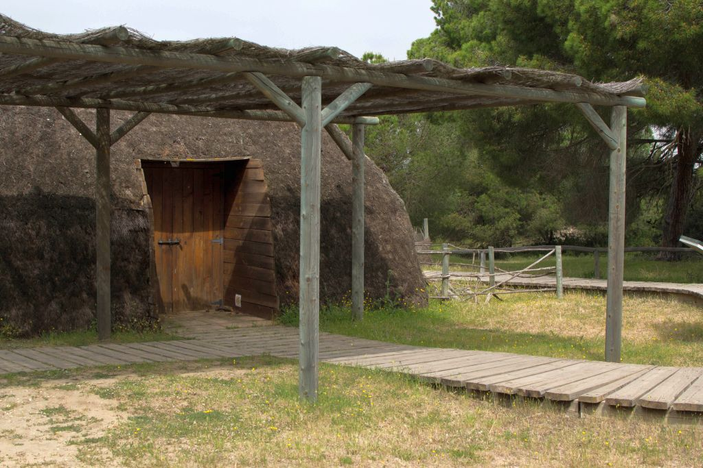
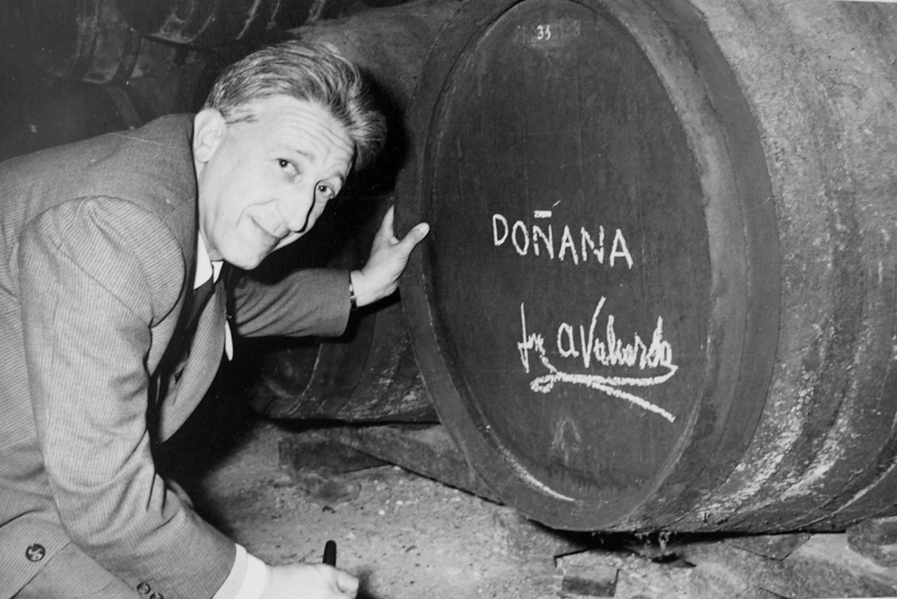

Parque Nacional de Doñana
Descubre Doñana: Naturaleza en Estado Puro
Biodiversidad
Doñana es un santuario de vida, hogar de una flora y fauna únicas en Europa. Desde majestuosos linces ibéricos hasta una increíble variedad de aves migratorias, la biodiversidad del parque se extiende por sus humedales, bosques y dunas, ofreciendo un espectáculo natural inigualable.
Senderos y Actividades
Explora Doñana a través de sus senderos más emblemáticos y vive experiencias que conectan con la naturaleza. Desde caminatas entre dunas móviles hasta paseos por humedales llenos de vida, cada actividad te permitirá descubrir la esencia de este entorno único.
Planifica tu Visita
Organiza tu viaje y aprovecha al máximo tu experiencia en Doñana. Descubre cómo llegar, qué visitar y qué necesitas para disfrutar de este paraíso natural. Prepárate para una aventura que recordarás siempre.
Historia del Parque
Doñana es testigo de siglos de historia y tradiciones. Sus paisajes han sido moldeados por civilizaciones que dejaron un legado cultural imborrable, desde los Tartessos hasta las romerías del Rocío. Adéntrate en un territorio donde la historia y la naturaleza se entrelazan.
Biodiversidad
El refugio de la vida salvaje en el sur de Europa
Ecosistemas
El Espacio Natural Doñana está considerado una de las zonas naturales protegidas más importantes de Europa. Es una encrucijada clave para las rutas migratorias de aves entre África y Europa, y un refugio para especies en peligro de extinción. Destacan dos ecosistemas principales: los bosques de pino y matorral mediterráneo, adaptados a suelos arenosos, y la inmensa marisma, formada por suelos arcillosos que albergan una gran biodiversidad gracias a su régimen hídrico estacional.
Fauna
Doñana es el espacio natural con mayor biodiversidad de Europa. Alberga más de 300 especies de aves, de las cuales unas 130 se reproducen habitualmente en sus marismas y humedales. También cuenta con 37 especies de mamíferos, como el emblemático lince ibérico, además de reptiles, anfibios y peces de agua dulce. Su riqueza no termina ahí, ya que miles de invertebrados aún por catalogar completan este singular ecosistema.
Flora
La flora de Doñana es diversa y única, influenciada por su ubicación geográfica y la variedad de ecosistemas. Alberga especies endémicas como la clavellina de Doñana y relictos botánicos como el helecho real. En sus marismas, dunas y bosques mediterráneos, la flora se adapta a condiciones extremas, creando paisajes excepcionales y fundamentales para la biodiversidad del parque.
Valores culturales
Doñana ha sido moldeada por siglos de interacción entre la naturaleza y el ser humano. Tradiciones como la Saca de las Yeguas o la devoción a la Virgen del Rocío reflejan un profundo vínculo cultural. Además, prácticas sostenibles, como el uso de materiales naturales para construir chozas o la recolección de recursos como piñones, han dejado un legado que conecta el pasado con el presente.
Parque Nacional de Doñana 💚 50 Aniversario
Doñana en porcentajes
Doñana alberga más de 300 especies de aves, representando el 70% de todas las especies presentes en Europa
En 2023, la población de lince ibérico alcanzó 2.021 ejemplares, con el 85% en España y 291 individuos en Portugal
Doñana ha perdido cerca del 60% de sus lagunas y podría perder todas sus zonas húmedas en 40 años sin medidas adecuadas
Red Natura 2000
Reserva de la biosfera (1981)
Diploma del Consejo de Europa a la Conservación (1985) – Patrimonio Mundial de la UNESCO (1994)
Carta Europea de Turismo Sostenible (2006)
Convenio RAMSAR
Senderos y Actividades
Explora los rincones que hacen único a Doñana
Planifica tu Visita
Todo lo que necesitas para disfrutar del parque
Época del año y mejor momento para visitar
Época del año y mejor momento para visitar
Primavera (Marzo - Mayo)
Clima suave, flora en su máximo esplendor.
Ideal para avistamiento de linces ibéricos y aves migratorias.
Verano (Junio - Agosto)
Días largos, buen clima para explorar las dunas.
Altas temperaturas, se recomienda visitar temprano o al atardecer.
Otoño (Septiembre - Noviembre)
Marismas llenas de agua tras las lluvias, paisajes impresionantes.
Perfecto para senderismo y observación de fauna.
Invierno (Diciembre - Febrero)
Mejor época para ver aves invernantes como los flamencos.
Temperaturas frías, menos turistas y mayor tranquilidad.
Horarios y precios de entrada
Horarios y precios de entrada
Horarios generales
Centro de Visitantes El Acebuche: 9:00 - 18:00 (Verano hasta las 20:00).
Excursiones en 4x4: Salidas a las 8:00, 12:00 y 16:00.
Rutas a pie: Abiertas todo el día, pero recomendadas de 7:00 a 19:00.
Precios de entrada (estimados, consultar según temporada)
Entrada libre a senderos y miradores: Gratis.
Excursión guiada en 4x4: Desde 35€ por persona.
Paseos en barco por el río Guadalquivir: 25€ por persona.
Observación guiada de aves: 20€ por persona.
Tipos de visitas
Tipos de visitas
Senderos autoguiados (gratis, acceso libre)
Sendero del Acebrón (2 km): Bosque mediterráneo y marismas.
Sendero de la Rocina (3 km): Ruta ideal para observar aves.
Laguna del Jaral (2 km): Paseo tranquilo con vistas al agua.
Rutas en 4x4 (excursión guiada, 3-4 horas, desde 35€)
Acceso a zonas restringidas del parque.
Ideal para ver fauna salvaje como linces y ciervos.
Paseos en kayak o barco (desde 25€ por persona)
Recorrido por el río Guadalquivir con vistas panorámicas del parque.
Oportunidad de ver aves acuáticas y ecosistemas únicos.
Avistamiento de fauna con guías especializados (20€ por persona)
Tours centrados en la observación de aves migratorias.
Uso de telescopios y prismáticos de alta calidad.
Normas y recomendaciones
Normas y recomendaciones
Prohibiciones importantes
No está permitido recolectar plantas o alterar el ecosistema.
No se puede acceder con vehículos privados fuera de las rutas autorizadas.
Prohibido encender fuego o realizar actividades que puedan afectar el medioambiente.
Consejos para visitantes
Llevar ropa y calzado cómodos, agua y protector solar.
Respetar los senderos marcados y no molestar a la fauna.
Usar prismáticos en vez de acercarse demasiado a los animales.
Seguir las indicaciones de los guías y personal del parque.
Teléfono de emergencias del parque: 112
Oficina del parque: +34 959 439 629
Historia del parque
Dentro del Espacio Natural Doñana, la zona más importante y protegida es el Parque Nacional. Ya en tiempos inmemoriales estas tierras fueron conocidas por su riqueza natural. Cazadero de la realeza y nobleza, no es hasta la década de los 60 cuando tras una serie de expediciones científicas se considera seriamente su protección. El Parque Nacional se crea en 1969, y posteriormente se amplía en 1978. Declarado Patrimonio de la Humanidad entre otros numerosos reconocimientos, hoy en día se le considera una joya natural insustituible. Más de 100.000 hectareas protegidas hacen que Doñana sea un lugar clave para la supervivencia de numerosas especies.
-
Siglo XIII
-
Siglo XIII
Pobladores de Doñana
Textos históricos confirman la presencia en Doñana de Tartessos, fenicios, romanos y árabes. Ya en el siglo XIII hay crónicas que mencionan estas tierras como lugar preferido de caza para la realeza.
-
Siglo XVI
-
El nombre de Doñana
Siglo XVI
El término “Doñana” hace alusión a una de sus más ilustres moradoras: Doña Ana de Mendoza, hija de la princesa de Éboli, y casada con el VII duque de Medina Sidonia, se retiró a vivir a estas tierras en el siglo XVI.
-
Siglo XX
-
1968
José Antonio Valverde
Doñana debe sus existencia a este ilustre científico español, que en los años 60 consiguió convencer a las autóridades de entonces de la importancia de preservar estas tierras. Hoy en día uno de los Centros de Visitantes de Doñana lleva su nombre.
-
Futuro
Galería
Doñana en Imágenes: Descubre su Magia


Contacto
Here i am